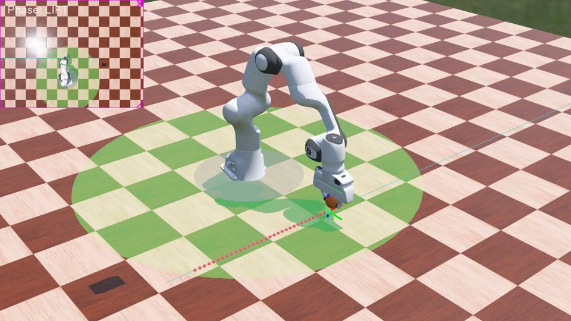
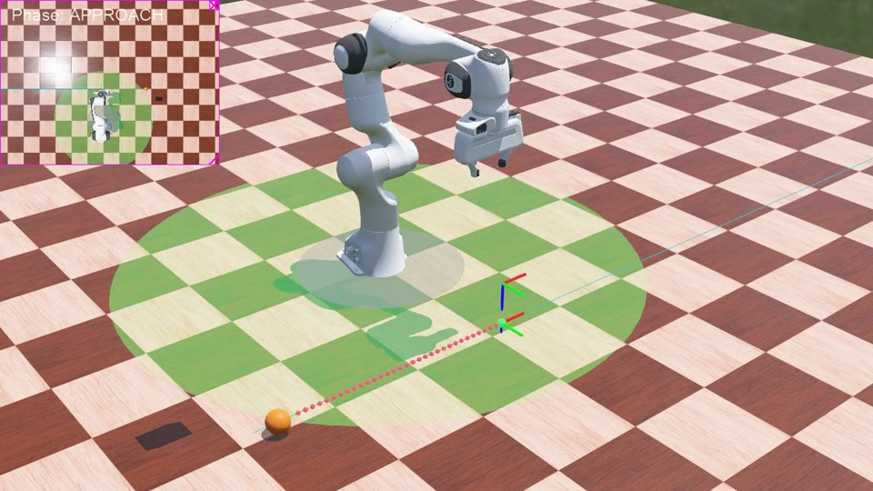
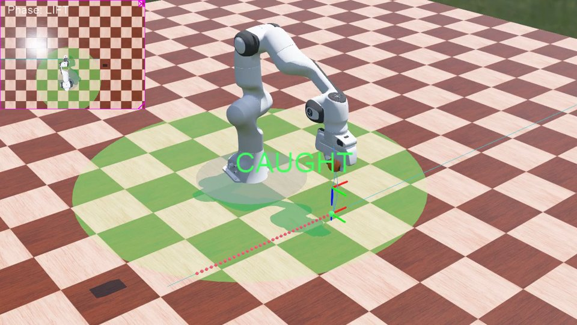
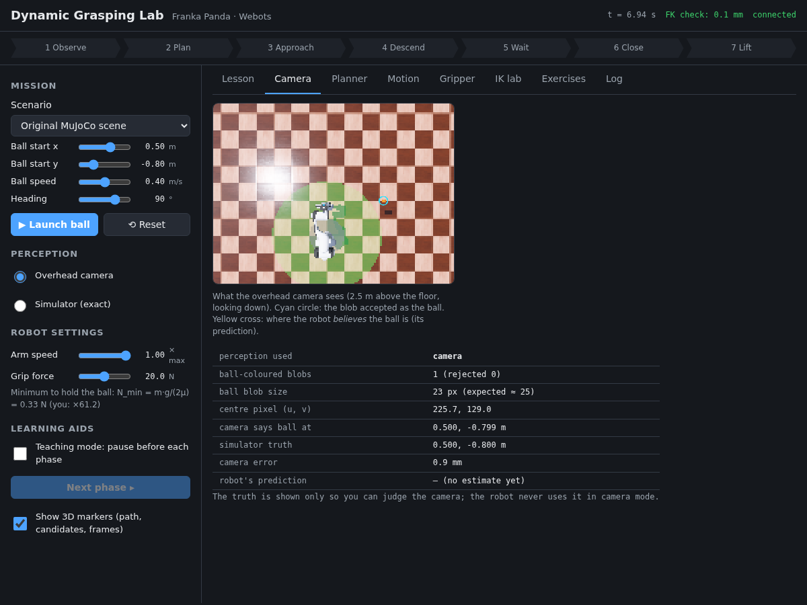
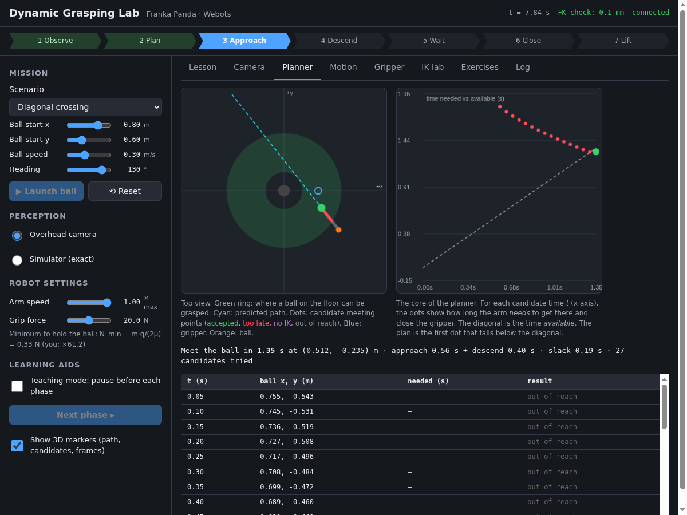
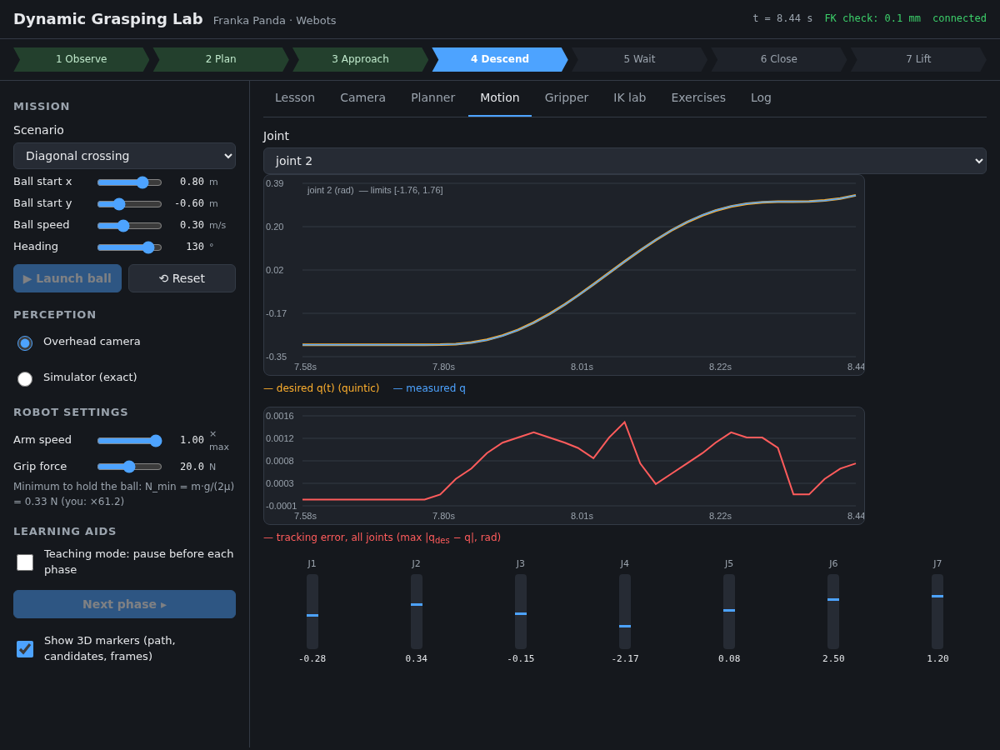
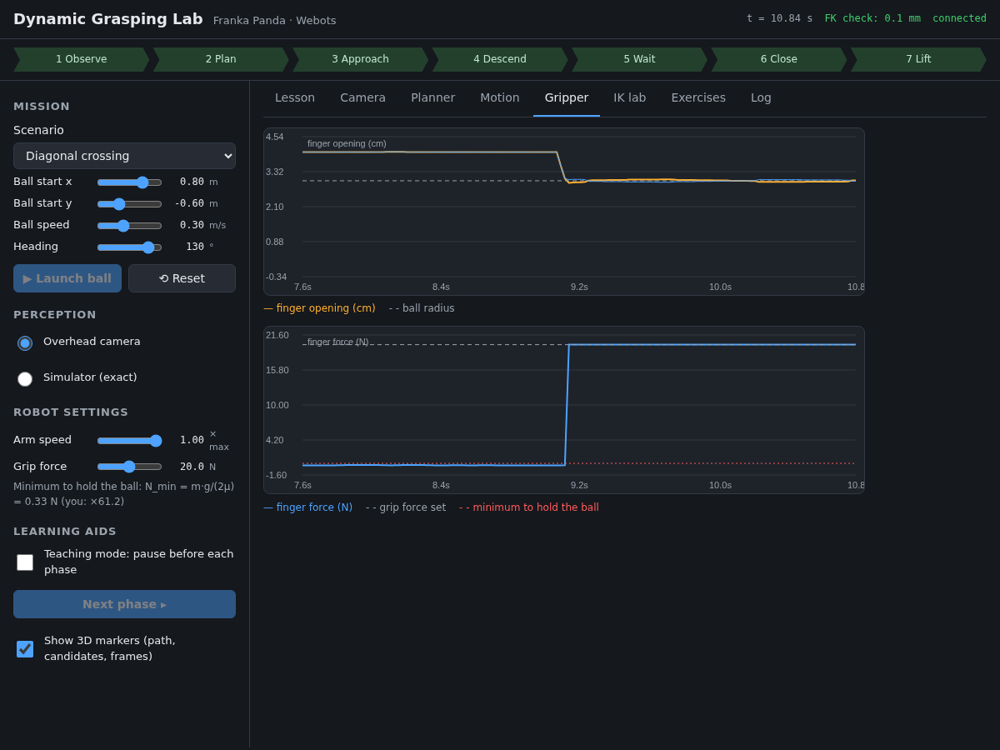
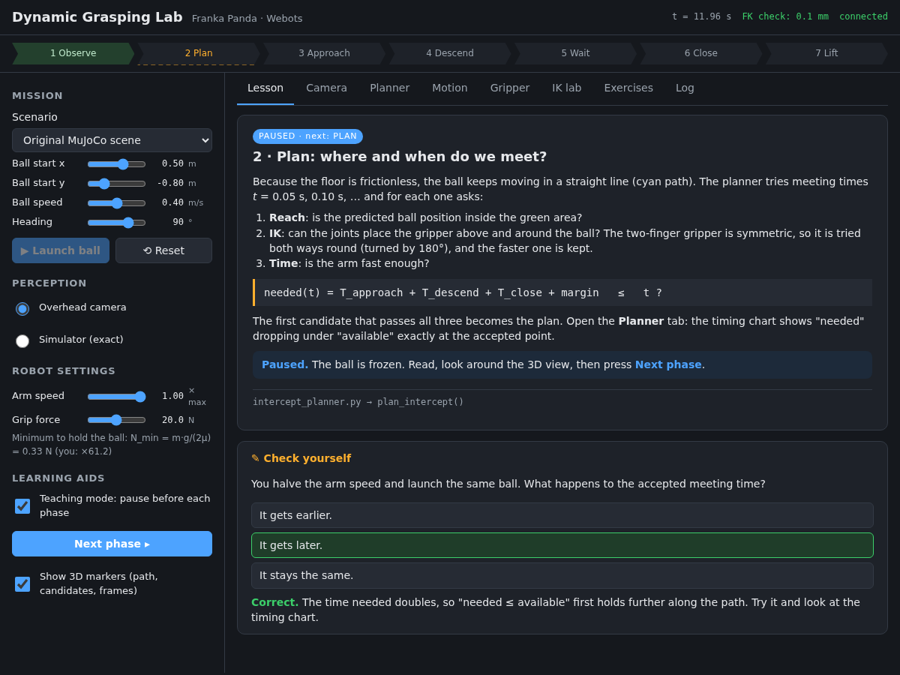

A ball slides across the floor. A 7-joint robot arm sees it with a ceiling camera, predicts where it is going, decides where and when to meet it, moves there in time and closes its gripper at the right instant. Every one of those steps is a classic robotics building block, and this guide shows you how to explore each of them, step by step.
Chapters 2–4 get you running in about 15 minutes. Chapters 5–7 are the course: work through them with the simulation open. Chapter 8 is for learners who want to write code, chapter 9 for teachers, and chapters 10–12 are reference.
Catching a moving object is harder than ordinary pick-and-place, because timing matters: the robot must arrive before the ball does and close its fingers at exactly the right moment. To do that, it chains seven steps, shown as the pipeline at the top of the lab window:
| Topic | What you will see and understand |
|---|---|
| Camera perception | Colour segmentation, blob analysis and the pinhole camera model turn an image into a ball position on the floor. |
| State estimation | A least-squares line fit turns noisy positions into a velocity; tracking and gating keep the estimate fresh while the arm moves. |
| Kinematics | Forward kinematics with screw theory (Product of Exponentials) and inverse kinematics by damped least squares. |
| Planning | Intercept planning: for each possible meeting time, is it reachable, does IK work, is the arm fast enough? |
| Trajectories | Quintic (minimum-jerk) motions and the shortest duration allowed by the joint speed limits. |
| Control | Velocity feed-forward plus proportional feedback for each joint. |
| Grasping | Friction, the minimum squeeze force Nmin = m·g / (2μ), and force-limited closing. |
Download Webots R2025a from cyberbotics.com (free and open source). On Ubuntu, the Debian package installs it in one command:
wget https://github.com/cyberbotics/webots/releases/download/R2025a/webots_2025a_amd64.deb sudo apt install ./webots_2025a_amd64.deb
Webots is about 160 MB to download and about 470 MB once installed. On Windows and macOS, use the installer from the website. The example is written for any platform but has been tested on Ubuntu 22.04.
The robot's program (its controller) is written in Python 3 and needs only NumPy:
pip install numpy
The project is the folder projects/dynamic_grasping_franka of the
webots-projects repository. To get only
this folder (keep its structure as it is):
git clone --depth 1 --filter=blob:none --sparse https://github.com/cyberbotics/webots-projects.git cd webots-projects git sparse-checkout set projects/dynamic_grasping_franka cd projects/dynamic_grasping_franka
Or download the whole repository as a ZIP from its GitHub page and open
projects/dynamic_grasping_franka.
The first time you open the world, Webots downloads the official Panda 3D model files (about 11 MB) and the floor and sky textures, then keeps them in its cache, so later runs also work offline.
worlds/dynamic_grasping.wbt. (The first time, Webots shows a welcome window; click
Start Webots with the selected theme.)

The left column holds the controls; the right side holds eight tabs. The bar at the top shows the seven phases: the current phase is blue, finished phases are green.
| Control | What it does |
|---|---|
| Scenario | Seven ready-made launches. Choosing one fills in the four sliders below it. |
| Ball start x, y · speed · heading | Design your own launch. Heading is the direction of travel in degrees (90° = towards +y). |
| Launch ball / Reset | Launch only works when the arm is home (it is greyed out otherwise). Reset opens the gripper, puts the ball back and sends the arm home. |
| Perception | Overhead camera: the robot finds the ball in camera images. Simulator (exact): perfect positions, no camera. |
| Arm speed | Fraction of the joint speed limits (0.3–1). Slower arm → later meeting point. |
| Grip force | Squeeze force per finger. The hint below shows the theoretical minimum, and turns orange below it. |
| Teaching mode | Pause before each phase (chapter 5). Next phase ▸ continues. |
| Show 3D markers | Turns the predicted path, candidate dots and target frames on or off in the 3D view. |
| Tab | What you find there |
|---|---|
| Lesson | A card for the current phase: the idea, the equations, the file/function that implements it, and a Check yourself quiz. |
| Camera | What the ceiling camera sees, the blob accepted as the ball (cyan circle), the robot's prediction (yellow cross), and the camera's error against the simulator's truth. |
| Planner | Top view with every candidate meeting point, the time needed vs time available chart, and a table of candidates with the reason each was rejected. |
| Motion | Desired (quintic) and measured angle of a chosen joint, the tracking error, and where each joint sits within its limits. |
| Gripper | Finger opening and finger force: watch the switch from moving to squeezing. |
| IK lab | Pick any gripper pose with sliders; inverse kinematics finds the joint angles and the arm moves there. |
| Exercises | The six programming exercises and a Check my exercises button (chapter 8). |
| Log | Everything the robot decided, with times, plus CSV export of the run data and planner candidates. |




Real catches take about two seconds, which is too fast to follow. Teaching mode stops the simulation logic before each phase, freezes the ball, and shows the lesson card for the phase that comes next.
The robot pauses five times: before PLAN, APPROACH, DESCEND, WAIT and LIFT. Nothing is lost while paused: the plan and the predictions are shifted in time along with the frozen ball, so the catch still works after a long pause.

A 320×240 camera 2.5 m above the floor looks straight down. For each image: segmentation keeps orange pixels; blob analysis keeps the group of pixels with the size and shape of the ball; back-projection turns its centre pixel into a floor position:
Over 0.2 s (13 frames) a straight line is fitted by least squares; its slope is the velocity:
The floor is frictionless, so the ball goes straight. The planner tries meeting times t = 0.05, 0.10, … s and keeps the first one that passes three checks: the point is reachable; IK finds joint angles above and around the ball (trying the symmetric gripper both ways round); and the arm is fast enough:
All seven joints follow a quintic from start to goal, with zero velocity and acceleration at both ends. The duration is the shortest that respects every joint's speed limit:
Meanwhile the camera keeps tracking the ball: every new frame refreshes the line fit, and frames far from the prediction are ignored (gating).
The meeting point is corrected with the latest estimate (typically 1–20 mm), then the gripper goes straight down from 12 cm above, fingers open on either side of the ball's path. The gripper's x-axis points along the ball's motion, so the fingers form a gate.
Near the gripper the hand hides the ball, so the last estimate is extrapolated for these final moments.
The finger target is set inside the ball with the motor force capped at the grip force: the fingers move freely, touch, then squeeze at the cap. The two fingers are kept symmetric in software, as on the real Franka Hand.
The gripper rises to 25 cm; the robot checks that the ball came with it. Lifting accelerates the ball, so the fingers must carry more than its weight, which is why the default grip force has a large safety factor.
Each experiment changes one thing. Predict the result first, then run it.
More lessons, questions and extension projects are in docs/LESSONS.md.
Six short exercises in the exercises/ folder, one per building block. Each file contains one
function to write, with the formulas you need above it.
| # | File | You write |
|---|---|---|
| 1 | ex1_forward_kinematics.py | T(q) = e[S₁]q₁ ⋯ e[S₇]q₇ M |
| 2 | ex2_quintic.py | quintic position and shortest duration |
| 3 | ex3_ik_step.py | one damped-least-squares IK step |
| 4 | ex4_velocity_fit.py | least-squares line through noisy positions |
| 5 | ex5_grip_force.py | minimum grip force, with and without lifting |
| 6 | ex6_pixel_to_floor.py | pinhole back-projection, pixel to floor |
raise NotImplementedError with your code.python3 exercises/check.py (add a number to check one exercise).$ python3 exercises/check.py
✔ Exercise 1: Forward kinematics (PoE) Correct!
✘ Exercise 2: Quintic trajectory quintic_position is wrong at t = 0.21 s.
Check τ = t/T and s = 10τ³ − 15τ⁴ + 6τ⁵.
· Exercise 3: One IK step (damped least squares) Not started: open exercises/ex3_ik_step.py
In the Webots scene tree, select the robot and edit its controllerArgs field:
| Argument | Effect |
|---|---|
--launch=0.5,-0.8,0.4,90 | Launch this ball (x, y, speed, heading) as soon as the arm is home. |
--perception=simulator | Start with exact positions instead of the camera. |
--grip-force=5 | Starting grip force in newtons. |
--script=file.json | Play a list of window commands: a hands-free classroom demo. |
--record-movie=demo.mp4 | Record the 3D view of the first launch, until just after its result. |
--exit-on-result | Quit Webots when the catch ends (exit code 0 = caught). |
A script is a JSON list of steps: wait for a phase, optionally hold it, then send a command, as if a user had pressed the button. This one launches a ball in teaching mode and moves on every 5 seconds:
[
{"wait": "IDLE", "send": {"cmd": "teach", "on": true}},
{"wait": "IDLE", "send": {"cmd": "launch", "x": 0.5, "y": -0.8, "speed": 0.4, "heading": 90}},
{"wait": "PAUSED:PLAN", "delay": 5, "send": {"cmd": "next"}},
{"wait": "PAUSED:APPROACH", "delay": 5, "send": {"cmd": "next"}},
{"wait": "PAUSED:DESCEND", "delay": 5, "send": {"cmd": "next"}},
{"wait": "PAUSED:WAIT", "delay": 5, "send": {"cmd": "next"}},
{"wait": "PAUSED:LIFT", "delay": 5, "send": {"cmd": "next"}},
{"wait": "CAUGHT"}
]
Commands include launch, reset, teach, next,
grip_force, arm_speed, perception, markers,
ik_goal and check_exercises. A full example covering every feature:
tests/webots_scripts/full_tour.json.
All tunable numbers (ball size, gains, camera period, safety margin, grip force…) are in
controllers/dynamic_grasping/config.py. Change one, restart the simulation
(Ctrl+Shift+T, reset simulation) and observe.
pip install pytest python3 -m pytest tests -q # 20 tests
They check the kinematics against Franka's published DH table, inverse kinematics, the quintic limits, the planner, the camera geometry, the exercise checker, and the robot's whole decision logic run against a small stand-in for Webots.
pip install websockets tests/run_webots_tests.sh # about 8–10 minutes
This runs every scenario, a 46-step tour of every feature, and an end-to-end check of the lab window (headless Chrome clicks through it and reports any JavaScript error). It ends with ALL PASSED. While it runs, minimized Webots windows come and go: do not close them.
| Problem | What to do |
|---|---|
| The lab window stays at "connecting…" | Press ▶ in Webots (the simulation must run), then reload the page (F5). |
| I cannot find the lab window | Double-click the robot arm, or right-click it → Show Robot Window. On Linux it opens in your browser, not inside Webots. |
| Launch ball is greyed out | The arm is not home yet. Press Reset and wait about 2 seconds. |
| "No module named numpy" in the Webots console | Install NumPy for the Python that Webots uses, or set it in Tools → Preferences → Python command. |
| The robot is missing, invisible or grey | Webots could not download the Panda model and its 3D files. Connect to the internet once and reopen the world (File → Reload World); they are cached afterwards. |
| Floor or sky look plain | Webots could not download textures (no internet). Harmless. |
| "The camera could not see the ball" | The ball started outside the camera image or under the arm. Start it further away, or switch Perception to Simulator. |
| "No feasible intercept" | The ball never passes where the arm can be in time. Aim it through the green disc, slow it down, or raise the arm speed. |
| "The ball slipped out" | Grip force too low. Raise it well above the minimum shown under the slider. |
| Changes to the code have no effect | Restart the controller: reset the simulation (Ctrl+Shift+T) or reload the world. |
All robot code is in controllers/dynamic_grasping/. Each file is one idea and can be read on its own.
| File | Contents |
|---|---|
dynamic_grasping.py | The state machine (the seven phases), joint control, tracking, messages to the window. |
config.py | Every tunable number in one place. |
perception.py | Camera: segmentation, blob analysis, back-projection. |
kinematics.py | Product-of-Exponentials forward kinematics, Jacobian, damped-least-squares IK. |
trajectory.py | Quintic trajectories and their minimum duration. |
intercept_planner.py | The forward-scan intercept search. |
gripper.py | Finger control, grip force, finger coupling. |
scene_markers.py | Teaching markers drawn in the 3D view. |
command_script.py | Plays scripted window commands. |
| Elsewhere | Contents |
|---|---|
worlds/ | The scene: the official Webots Panda with a ceiling camera and a GPS at the gripper's tip, the ball, the frictionless floor. |
plugins/robot_windows/ | The lab window (HTML, CSS, JavaScript). |
exercises/ | The six exercises and their checker. |
tests/ | Offline tests, the Webots test runner, the window check. |
docs/LESSONS.md | The full lessons with questions and extension projects. |
PORTING_NOTES.md | What changed from the MuJoCo original, and what testing in Webots taught us. |